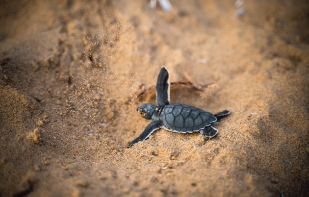

Gallery



Located on the southern coast of Sri Lanka, Hikkaduwa Turtle Hatchery is a sanctuary for sea turtles.
The Hikkaduwa Hatchery is a popular destination for those who want to learn more about the conservation efforts around turtles. The hatchery rescues and rehabilitates different species of turtles such as Olive Ridley, Green, Hawksbill, and Loggerhead turtles. Here are some things you can do at the hatchery: